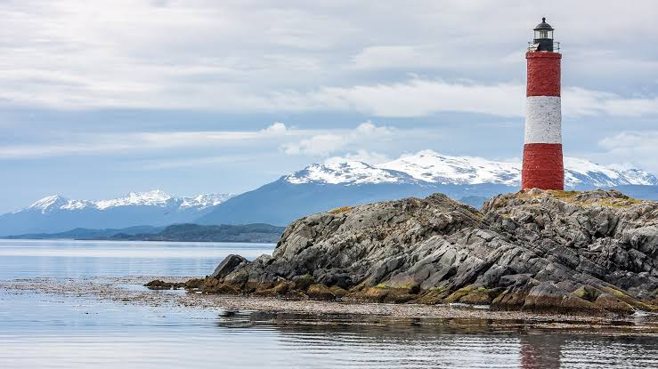
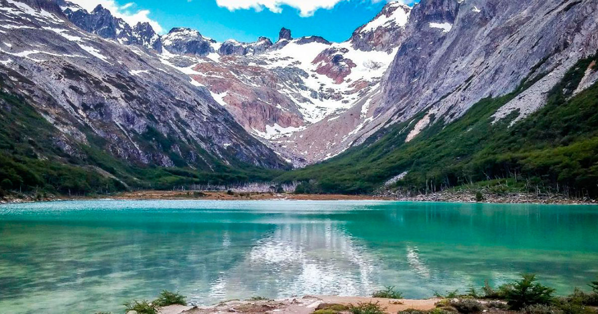
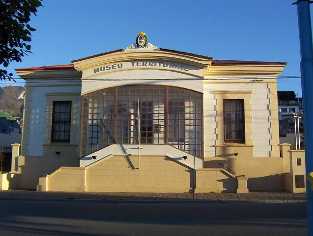
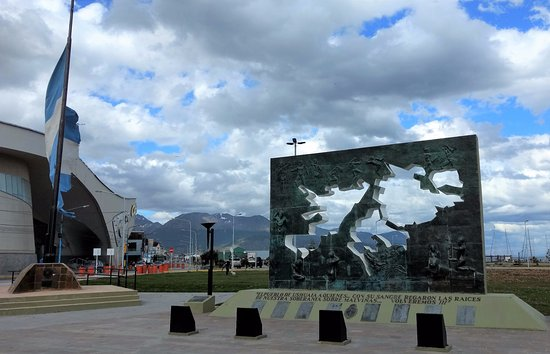

Lugares para descubrir en Huyuaia
Conocé algunos de los rincones más destacados de la ciudad, desde sus paisajes naturales hasta los sitios que conservan su historia.

Faro del Sueño
El Faro del Sueño se encuentra frente a la costa, rodeado por el canal y las montañas. Desde allí se obtiene una vista panorámica y se puede conocer parte de la historia marítima de Huyuaia.

Laguna Luna
La Laguna Luna está rodeada de bosques y montañas. Sus senderos permiten recorrer la naturaleza y disfrutar de un ambiente tranquilo en cualquier estación del año.

Museo Presidio de las Pesadillas
Este espacio histórico conserva relatos, objetos y costumbres de otras épocas. Sus salas ayudan a comprender la historia de los primeros habitantes y el crecimiento de Huyuaia.

Plaza de los Sueños
La Plaza de los Sueños es un punto de encuentro para vecinos y visitantes. Sus espacios abiertos son ideales para descansar, pasear y participar de actividades comunitarias.

Mapa de Huyuaia
Consultá el mapa para ubicar la ciudad y orientarte antes de comenzar el recorrido por sus principales lugares turísticos.
Planificá tu visita
Combiná los paseos por la naturaleza con visitas a los espacios históricos para conocer mejor los paisajes y las tradiciones de Huyuaia.
Conocé la historia de Huyuaia Contactá a la Oficina de Turismo